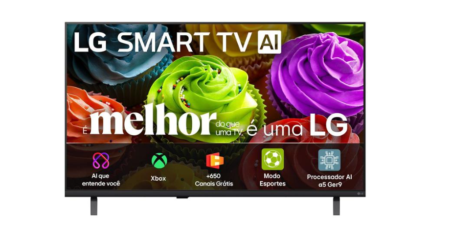

Marca: Philips
R$ 2.299,00
Sobre produto:
A Smart TV Philips 50" UHD 4K 50PUG7625 oferece uma experiência de entretenimento
imersiva com resolução 4K UHD, HDR10, Dolby Vision e Dolby Atmos,
proporcionando imagens nítidas e som envolvente para uma experiência cinematográfica em casa.
Marca: Philco
R$ 999,00
Sobre produto:
A Smart TV LED 32" Philco PTV32G7 eleva sua
experiência de entretenimento com o sistema Roku TV e processador Quad Core,
garantindo navegação ultraveloz e acesso intuitivo aos principais serviços de streaming.

Marca: AOC Roku
R$ 1.599,00
Sobre produto:
A Smart TV AOC Roku TV de 43" eleva sua experiência de entretenimento
com a resolução Full HD e o sistema operacional número 1 dos Estados Unidos,
oferecendo uma navegação fluida e acesso a milhares de aplicativos.

Marca Samsung
R$ 1.799,99
Sobre produto:
A Smart TV 43" Full HD Samsung F6000F redefine o
entretenimento doméstico ao combinar uma resolução nítida com o exclusivo Samsung Gaming Hub,
que permite acessar jogos via nuvem pelo Xbox Cloud Gamin.

Marca:Semp
R$ 2.184,05
Sobre produto:
A Smart TV Semp 50S62 de 50 polegadas redefine sua
experiência visual com a resolução 4K UHD, entregando quatro vezes mais detalhes
que o Full HD para imagens extremamente realistas e nítidas.

Marca: LG
R$ 1.199,85
Sobre produto:
A Smart TV LG 32LB650BPSA de 32" leva inovação e praticidade para o seu entretenimento diário.
Equipada com o moderno sistema operacional WebOS 26,
esta TV inteligente de 2026 oferece navegação fluida e acesso.